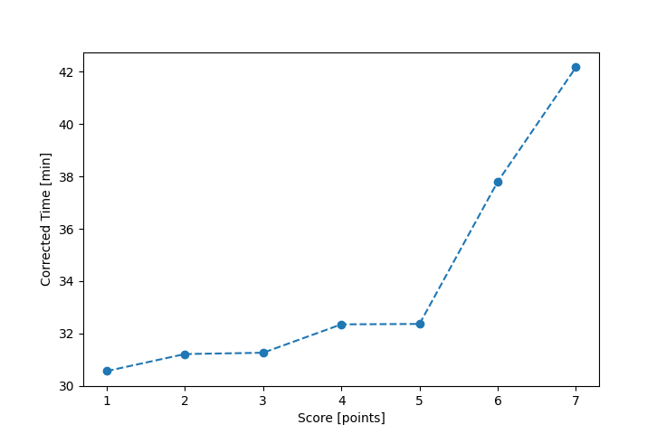

| Wind: | 2-3 (BFT) |
|---|---|
| RC: | Nick_H, Lewis_V |
| Date: | June 14, 2020 |
| Notes: | M2 Starboard Rounding |
| Rank / Score | Name | Boat | Input Time [mm:ss] | Input Offset [mm:ss] | Race Time [mm:ss] | Race Time [s] | Handicap | Corrected Time [s] | Corrected Time [mm:ss] |
|---|---|---|---|---|---|---|---|---|---|
| 1.0 | Mike_F | SF | 30:41 | 00:00 | 30:41 | 1841 | 1.00400 | 1834 | 30:34 |
| 2.0 | Rod_H | LASEM | 30:22 | 00:00 | 30:22 | 1822 | 0.97300 | 1873 | 31:13 |
| 3.0 | Ron_F | F5 | 30:12 | 00:00 | 30:12 | 1812 | 0.96600 | 1876 | 31:16 |
| 4.0 | Nedra_F | SF | 32:29 | 00:00 | 32:29 | 1949 | 1.00400 | 1941 | 32:21 |
| 5.0 | Bill_P | SF | 32:30 | 00:00 | 32:30 | 1950 | 1.00400 | 1942 | 32:22 |
| 6.0 | Ian_O | SF | 37:57 | 00:00 | 37:57 | 2277 | 1.00400 | 2268 | 37:48 |
| 7.0 | Jim_S | SF | 42:20 | 00:00 | 42:20 | 2540 | 1.00400 | 2530 | 42:10 |
| 8.0 | Matt_L | DLPSR | FIP_8 | -- | -- | -- | -- | -- | FIP_8 |

Application Notes:
All race results are unofficial
View source code at https://github.com/cessnao3/portsmouthracecalc/